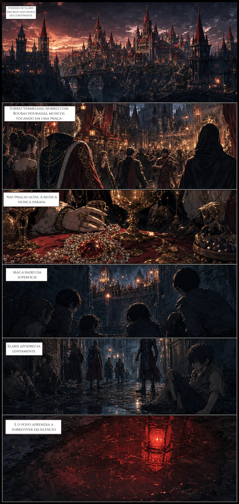

HQ de fantasia medieval
Valtor
Treinada pela Carmesim para matar Igor, Júlia precisa escolher a quem será leal quando a guerra se aproxima.
Biblioteca
Capítulos
Reino de Elaris
Capítulo I — A Criança Carmesin
Julia Polli nasce sob a sombra de uma ordem secreta ligada a Coroa. Treinada para ser instrumento politico, ela recebe uma missao que aponta para Valtor e para Igor Jose Farias, herdeiro da Linhagem Prata.
20 páginas
HQ formato
Elaris arco
